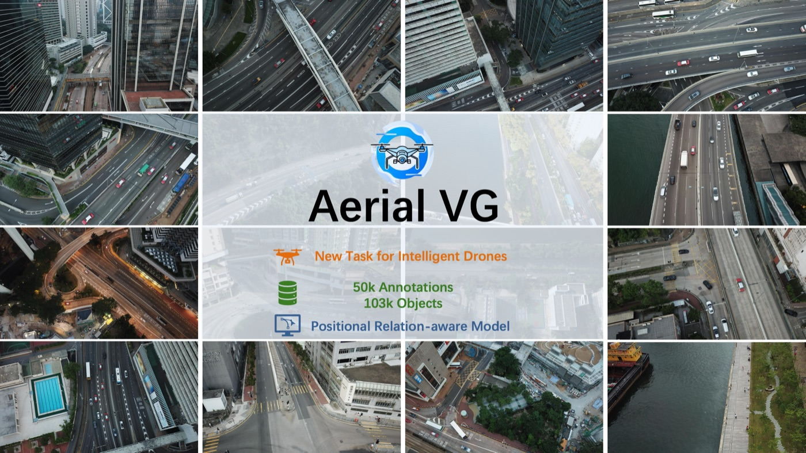
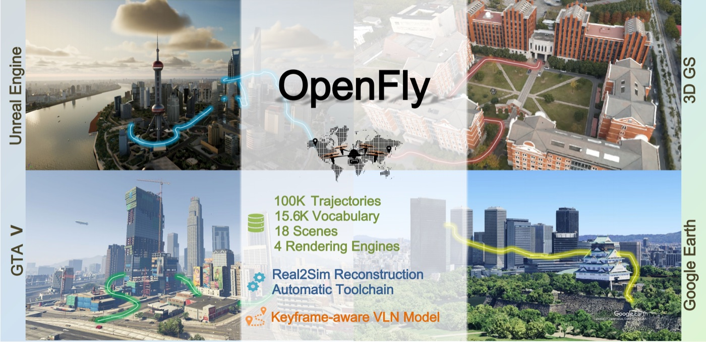
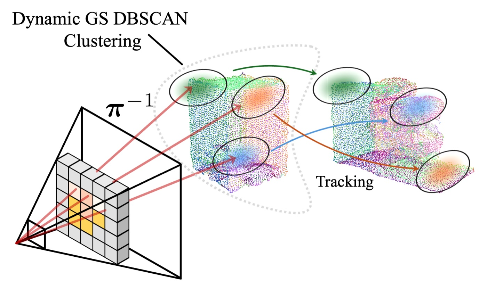

Embodied AI
Building agents that perceive, reason, and act in physical or simulated environments.
Ph.D. Student · Research Intern · Embodied AI
My research explores how embodied agents understand instructions, navigate complex environments, and build predictive world models.
I am a Ph.D. student at Northwestern Polytechnical University, where I also completed my bachelor's degree, and I am currently a research intern at Shanghai Artificial Intelligence Laboratory.
Updates
OpenFlyV2, our onboard vision-language-action model for aerial perception and navigation, is available on arXiv.
FreeGaussian was published in the AAAI 2026 proceedings.
OpenFly was accepted to ICLR 2026.
AerialVG was accepted to ICCV 2025.
Focus
Building agents that perceive, reason, and act in physical or simulated environments.
Connecting visual perception and language instructions for navigation and decision making.
Learning structured representations that help agents predict, plan, and generalize.
Selected Work

arXiv 2026
OpenFlyV2 unifies aerial perception, spatial reasoning, and navigation in a single onboard model, generating flight waypoints at 10 Hz on NVIDIA Jetson Orin NX. OpenFlyV2-130K combines 70K navigation trajectories with 60K vision-language pairs.


ICLR 2026
OpenFly provides an automated toolchain, large-scale benchmark, and OpenFly-Agent for outdoor aerial vision-language navigation.

AAAI 2026 · Oral
FreeGaussian reconstructs controllable 3D Gaussian representations for articulated objects from monocular video without manual annotations.
Background
Working on research topics around embodied intelligence, vision-language navigation, and world models.
Researching Embodied AI, Vision-Language Navigation, and world models.
Completed undergraduate study at Northwestern Polytechnical University.
Contact
I am open to research conversations, collaboration, and practical projects around Embodied AI, Vision-Language Navigation, and world models.